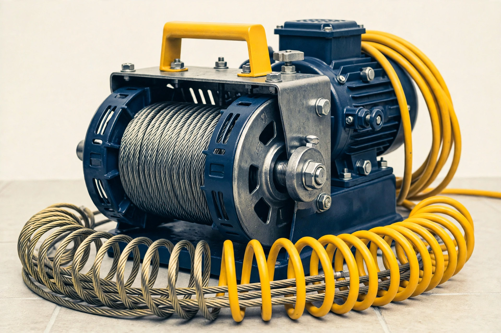

01
Passo 01
Chame no WhatsApp
Envie uma mensagem a qualquer hora do dia ou da noite. Nossa central atende 24 horas por dia, 7 dias por semana.
Atendimento direto, sem intermediários[Status: plantão 24h ativo em Goiânia]
Encanador e desentupidora de plantão em Goiânia e região — 24 horas, todos os dias. Chame no WhatsApp, mande uma foto e receba o orçamento antes da visita.
★★★★★ 5,0 no Google (387 avaliações reais) • Preço justo e serviço com garantia • Atendimento imediato
Condições de garantia e pagamento [a confirmar] com o Soares antes do serviço.

Plantão Soares: equipe pronta.
Atendimento 24 horas, todos os dias, em Goiânia e região.
Selecione o problema urgente:
[Triagem preliminar]: selecione acima ou descreva no WhatsApp para envio do maquinário adequado.
Disparar chamado no WhatsApp[Protocolo de socorro rápido]
01
Passo 01
Envie uma mensagem a qualquer hora do dia ou da noite. Nossa central atende 24 horas por dia, 7 dias por semana.
Atendimento direto, sem intermediários02
Passo 02
Envie uma foto ou vídeo curto do ralo, pia, vaso, caixa ou vazamento. Nossa equipe avalia a gravidade antes da visita.
Diagnóstico técnico preliminar03
Passo 03
Você recebe valores transparentes antes da execução. O técnico chega com maquinário rotativo moderno. Condições de garantia e pagamento [a confirmar].
Orçamento antes da visita[Precisa de intervenção imediata?]
Atendimento de emergência em Goiânia e região, 24 horas, todos os dias. Envie foto ou vídeo no WhatsApp e receba o orçamento antes da visita.
[Especificações técnicas e maquinário]
Tecnologia: sondas rotativas & hidrojato. Os 6 serviços do perfil oficial do Soares.
OS-01 // Serviço de plantão

Desobstrução mecânica de tubulações residenciais e comerciais, com máquinas rotativas e sondas flexíveis, sem quebrar cerâmicas, pisos ou bancadas na grande maioria dos casos.
Sintomas típicos:
OS-02 // Serviço de plantão

Remoção de placas de gordura endurecida e restauração da vazão de saída para a rede de esgoto.
Sintomas típicos:
OS-03 // Serviço de plantão

Desobstrução de calhas, tubos de queda e caixas de passagem pluviais para evitar alagamento.
Sintomas típicos:
OS-04 // Serviço de plantão
Lavagem pressurizada em canos de grande porte e galerias comerciais, limpando as paredes internas dos canos.
Sintomas típicos:
OS-05 // Serviço de plantão
Troca de registros, substituição de válvulas de descarga, instalação de torneiras e bóias de caixa d'água.
Sintomas típicos:
OS-06 // Serviço de plantão
Rompimento de canos, inundações residenciais e intervenções noturnas com fechamento emergencial do fluxo.
Sintomas típicos:
[Avaliações oficiais Google Business]
5,0 ★★★★★
387 avaliações reais de clientes atendidos em Goiânia e região. Mais de 160 avaliações positivas no perfil. Avaliações autênticas extraídas diretamente do perfil oficial Google do Soares Encanador & Desentupidora.
★★★★★
“Fiquei muito satisfeita com o serviço… atendimento excelente, desde o primeiro contato… Recomendo de olhos fechados!”Joyce Almeida Quinta — Cliente residencial, Goiânia
★★★★★
“Muito eficiente, me atendeu no mesmo dia que solicitei e chegaram super rapido… Super indico!”Caio Oliveira Moz — Atendimento rápido, Goiânia
[Esclarecimentos técnicos]
Na grande maioria dos casos, não. Utilizamos máquinas com sondas espirais flexíveis que desobstruem sem quebrar piso ou parede. Se algum caso exigir abertura, isso é combinado com você antes — nada é feito sem a sua aprovação.
Alerta de risco: não recomendamos o uso de soda cáustica. A soda reage com a gordura acumulada formando uma massa endurecida, e pode danificar juntas e tubulações. O desentupimento mecânico é o método seguro.
Sim, plantão 24 horas, todos os dias — inclusive sábados, domingos e feriados, em qualquer horário.
O orçamento é combinado com você no WhatsApp antes do serviço, após ver a foto e o local. Condições de pagamento e garantia [a confirmar] com o Soares para o seu caso — nada é cobrado sem a sua aprovação prévia.
[Plantão 24h — Goiânia e região]
Atendimento urgente em Goiânia e cidades vizinhas [sob consulta]. Ligue ou envie mensagem para falar com o Soares agora.